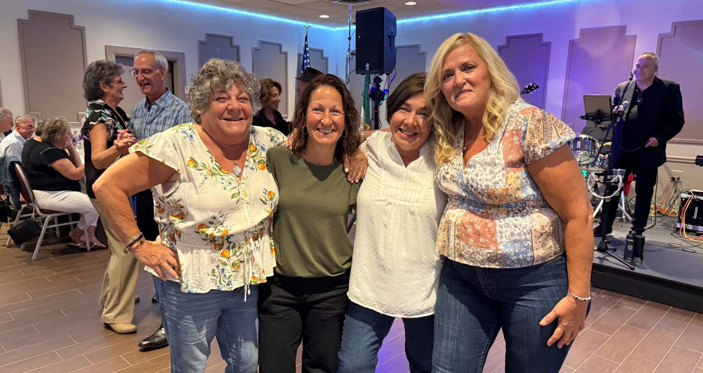
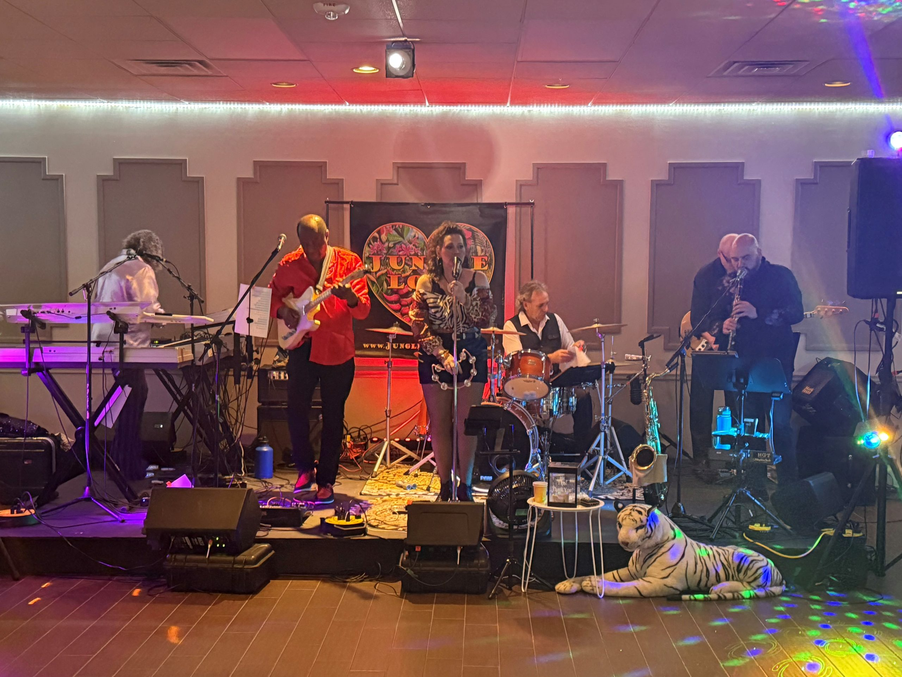
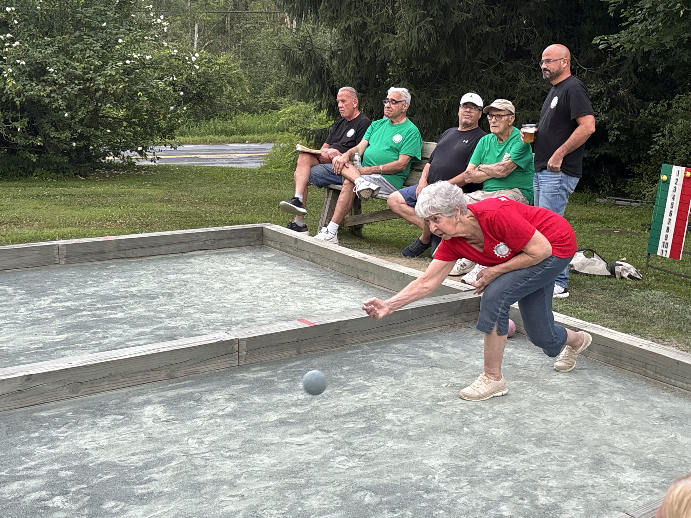
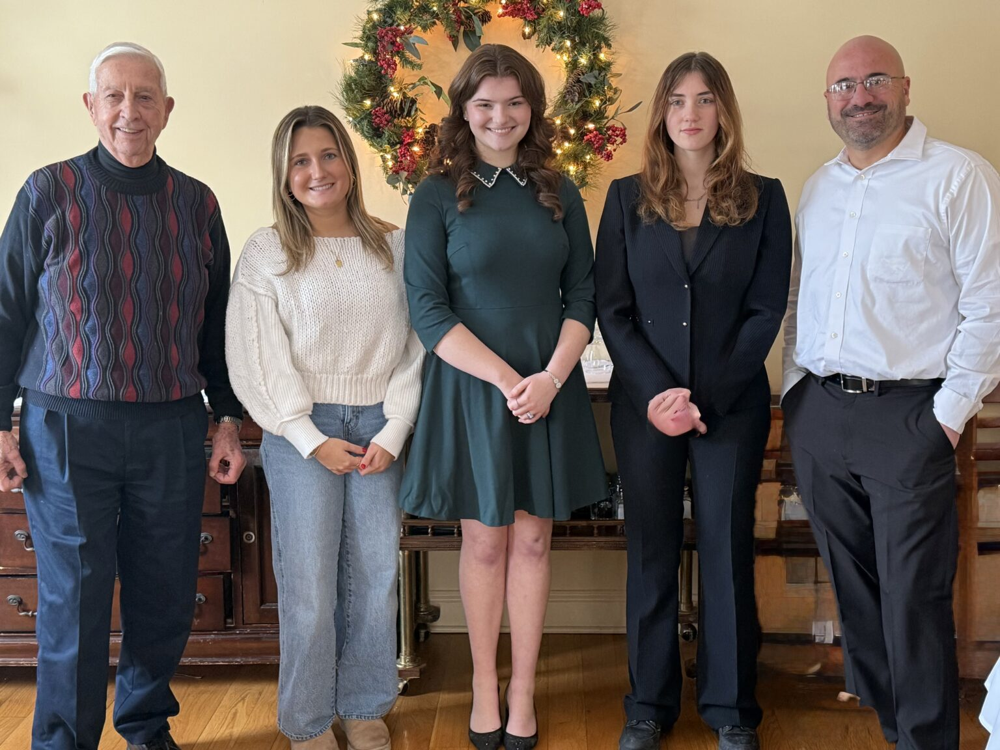
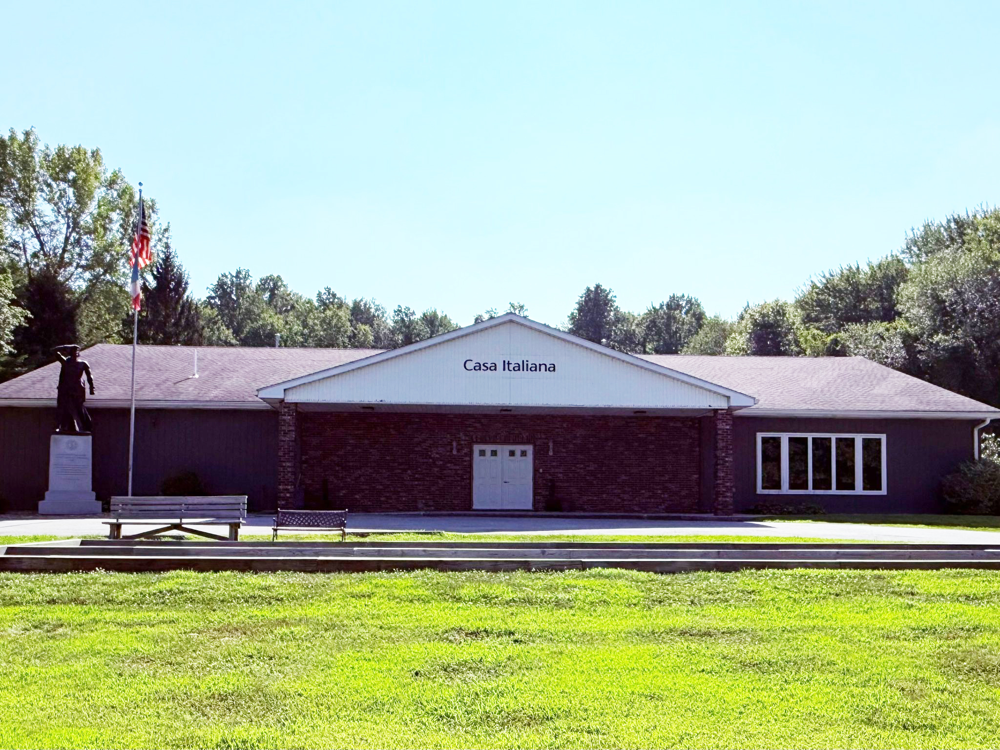

OCT10
Details BENVENUTI · WAPPINGERS FALLS, NY
A little Italy.
A lot of heart.
Good food. Familiar faces. Traditions that bring us together. Find your community at The Italian Center.
Since 1922Celebrating our Italian American story
in the Hudson Valley.
in the Hudson Valley.

LA DOLCE VITA, TOGETHERThe best part? The people.
Save a seat. Make a memory.
Come for an evening.
Stay for the community.

More reasons to get together.OCT20
Tuesday · 6–9 PM · Culture
Provincial Night: Lazio
Celebrate the traditions of Regione Lazio. Dinner at 7 PM.
October 2026 highlights · See schedule and event information
Life at the center
A shared heritage.
A world of ways to connect.
From the bocce court to the dance floor,
our traditions are made to be lived.

01 / Play
A little friendly competition
Bocce, golf, and a good hand of Briscola.
Explore activities →02 / Celebrate
Bring your appetite for life
Provincial Nights, music, and moments together.
Discover our gatherings →
03 / Give back
Help the next generation shine
A community that invests in its students.
Meet the scholarship program →
Our home in Wappingers FallsRooted in history. Alive today.
Our story keeps
bringing us together.
Generations of Italian Americans have found friendship and connection here. Today, we carry that spirit forward through culture, celebrations, and community life.
Get to know the center